|
SPANISH AFRICA
MOROCCAN OVERPRINTS
Portuguese and Spanish power had been growing in the
Mediterranean region since the beginning of the 15th century, and in 1415
the Moroccan port of Ceuta was captured by Portugal. Moroccan forces
defeated the Portuguese in 1578, and by 1700 had regained control of many
coastal towns which had previously been in Portuguese hands. During the
18th and early 19th centuries, the Barbary Coast became the scene of
widespread piracy. Ships which traded in the Mediterranean were plundered
and protection money was extorted from several sea-going nations.
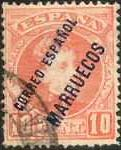 |
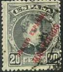 |
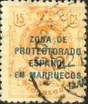 |
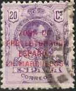 |
Morocco shared possession of the Straits of Gibraltar with Spain,
resulting in a focus of attention from the maritime powers in Europe,
particularly France and Britain. By the beginning of the 20th century
Britain had recognized Morocco as a French sphere of influence and in 1904
Morocco was divided between France and Spain, with the former receiving
the larger area. These arrangements were regarded as spurious by Imperial
Germany and, despite the Act of Algeciras (an agreement signed by the
major powers in 1906, which guaranteed equal economic rights in Morocco),
Germany was still dissatisfied.
|
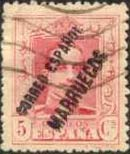 |
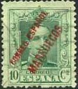 |
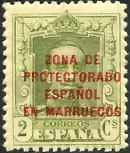 |
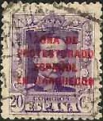 |
In 1911, a German gunboat was dispatched to the Moroccan port of Agadir,
in an attempt to excite further nationalist unrest against the French.
French troops were mobilized and Europe seemed poised on the edge of
serious conflict.
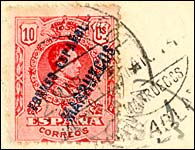 |
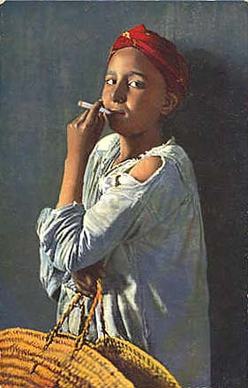 |
Negotiations resulted in Germany's agreement to the French protectorate
over Morocco, in return for concessions elsewhere, and war was averted.
The sultan of Morocco officially recognized the French protectorate in
1912.
 |
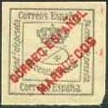 |
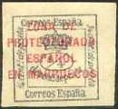 |
Spanish Morocco was experiencing its own share of problems, with a
revolt against Spanish rule which flared up in 1920. Led by Abd-el-Krim,
the Moroccan resistance forces had driven the Spanish forces out of
Moroccan territory within four years. France and Spain formed an alliance
against Abd-el-Krim and the revolutionary forces were defeated in 1926.
|
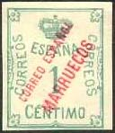 |
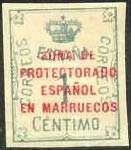 |
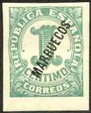 |
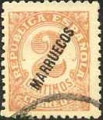 |
On the first two rows we present
overprinted stamps of Spain that the Spanish King Alfonso XIII These stamps
were issued starting by the year 1900. Spain was a monarchy till 1931, when
a republic was established. Please notice the variety of different
overprints, going from 4 lines of text to just one line (the name of the
country). The stamps on the 3rd row were issued in Spain in 1872 (Kingdom,
King Amadeo), and overprinted for usage in Morocco in 1915 - 1916. The last
two stamps on the last row were issued by Spain in 1920 and used in Morocco
between 1923 - 1925. The last two stamps were issued 1933 by Spain, and
overprinted and used in Morocco in the same year.
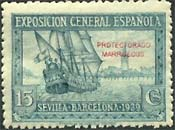
See above just another nice stamp, commemorating the
National Philatelic Exhibition Sevilla - Barcelona from 1939, overprinted
Protectorado Marruecos.
Credits: many thanks to Tracy Barber
(USA) for the scans.
|